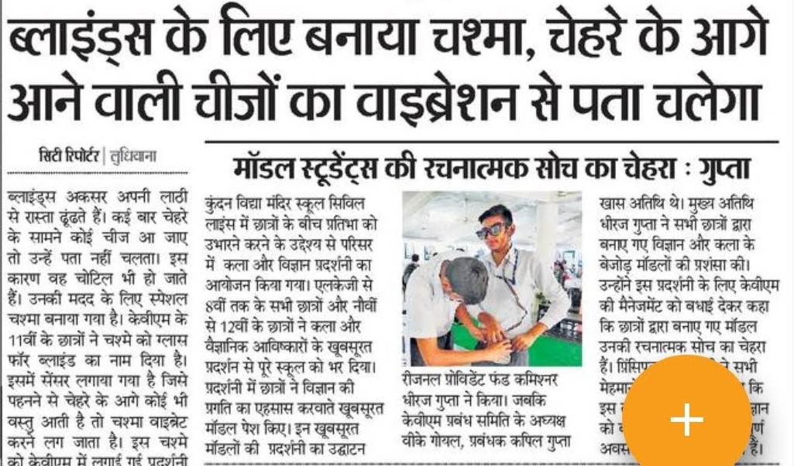

Accessibility Glasses for the blind
A project focused on assisting the visually impaired by using technology !
Table of Contents
Introduction
I am
Pratham Bansal ,
currently a student at University of British
Columbia pursuing a major in maths and computer
science.
I built this project when I was in high school
and is one of my finest, recognized and beloved
project. It was not an easy project and took a
lot of research and hardwork
There were moments in the middle when I thought it is impossible and I might never finish it, but in the end it was all worth it.
Most of the components used to build the model have been salvaged from electronic-waste, like the vibration motors were extracted from old bar phones, scroll component was extracted from my old video game controller which no longer worked

Components
The following components were used to build the glasses
Working
The model functions in the following manner, The
front of the glasses is equipped with two
ultrasonic sensors that are used to detect
obstacles in the way. The range of the sensors
can be adjusted from 2cm to 400cm
Then there are 2 small vibration motors on both
side of the glasses, they are used to inform the
user about any obstacle in the way. The motors
start vibrating at a low-frequency when an
obstace is detected far from the user (not a
threat) and start vibrating at relatively higher
frequencies as the person approaches near the
obstacle.
All the commands like when to vibrate, how fast
to vibrate, when to stop, at what range the
obstacles is a threat, are all managed by a
microchip(NodeMcu), which lies in a box like a
brain of the project. The microchip is powered
by a rechargable lithium-ion battery.
You can hook that box to your belt and carry it
around with ease. The glasses can also be
charged from the box. In one charge the glasses
will last about 3-4 days on average.
Advance Prototype (Testing a better version of the model)
Recognition
Recognised by the school's annual exhibition and GGNIMT Technical institute and bagged first prize in the matrix 2019 demostration.
Article published in the local newspaper
